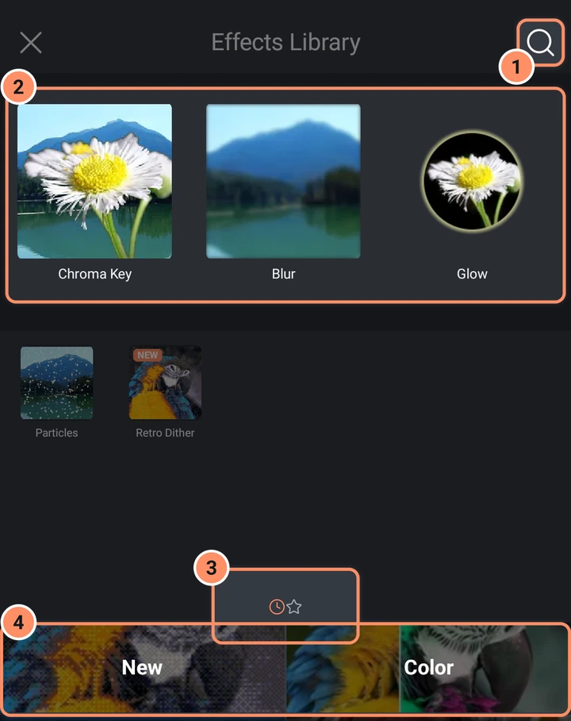
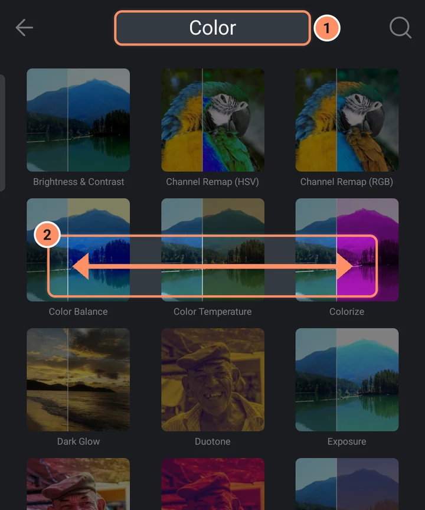
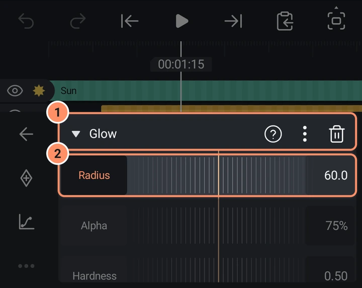
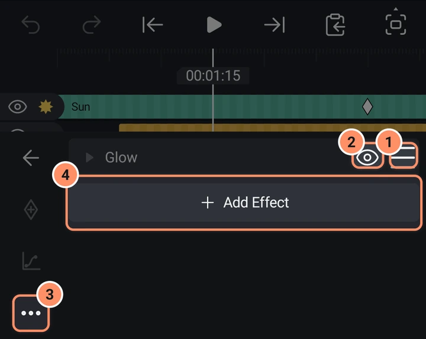
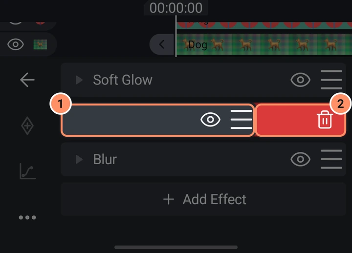
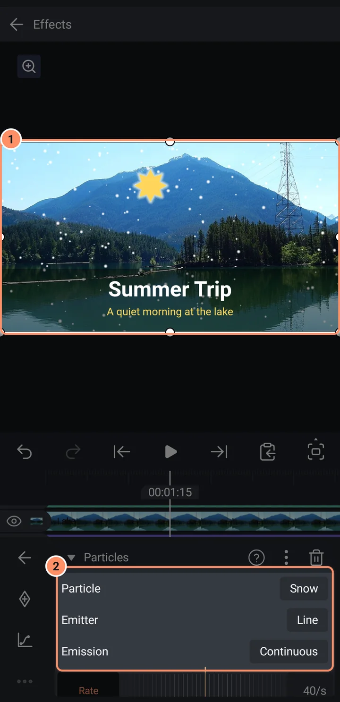

इफ़ेक्ट्स का उपयोग
इफ़ेक्ट्स जोड़ें, स्टैक करें, क्रम बदलें, छिपाएँ, कॉपी करें और एनिमेट करें, और इफ़ेक्ट लाइब्रेरी में सही इफ़ेक्ट खोजें।
इस पेज पर
एक इफ़ेक्ट यह बदलता है कि कोई लेयर कैसी दिखती है या चलती है: ब्लर, ग्लो, कलर परिवर्तन, शेक। एक लेयर में आप जितने चाहें उतने इफ़ेक्ट्स रख सकते हैं। AbsentMotion में बारह श्रेणियों में 226 इफ़ेक्ट्स हैं। इस वेबसाइट पर इफ़ेक्ट लाइब्रेरी हर इफ़ेक्ट को उसकी सभी सेटिंग्स के साथ सूचीबद्ध करती है।
इफ़ेक्ट जोड़ें
- एक लेयर चुनें।
- टूल ग्रिड में इफ़ेक्ट्स पर टैप करें।
- सूची के अंत में इफ़ेक्ट जोड़ें पर टैप करें। इफ़ेक्ट लाइब्रेरी खुलती है।
- किसी इफ़ेक्ट पर टैप करें। यह अपनी मानक सेटिंग्स के साथ जोड़ा जाता है और इसकी सेटिंग्स तुरंत खुल जाती हैं।
पहले किसी इफ़ेक्ट के बारे में पढ़ने के लिए, उसके टाइल को दबाकर रखें। एक पेज खुलता है जिसमें एनिमेटेड प्रीव्यू, विवरण, पसंदीदा के रूप में चिह्नित करने के लिए एक स्टार (पसंदीदा होने पर वह भर जाता है), + स्टैंडर्ड सेटिंग्स और कुछ इफ़ेक्ट्स के लिए तैयार प्रीसेट होते हैं।
इफ़ेक्ट लाइब्रेरी
- सबसे ऊपर एक सर्च बॉक्स ("खोजें") है जो पहले नामों से मिलाता है, फिर विवरणों से, और AI टूल्स व प्रीसेट भी खोजता है।
- चुनी गई लेयर के लिए तीन सुझाए गए इफ़ेक्ट्स की एक पट्टी: उस तरह की लेयर (वीडियो, फ़ोटो, टेक्स्ट, शेप, ग्रुप या 3D मॉडल) पर आपके सबसे ज़्यादा इस्तेमाल किए जाने वाले ज़्यादा से ज़्यादा दो इफ़ेक्ट्स, और कम से कम एक ऐसा इफ़ेक्ट जो उस लेयर के लिए सही हो, जैसे ग्रीन-स्क्रीन क्लिप के लिए क्रोमा की। जिन इफ़ेक्ट्स को आप बार-बार छोड़ देते हैं, वे दूसरों के लिए जगह बना देते हैं। फिर आपके हालिया या पसंदीदा इफ़ेक्ट्स का ग्रिड, फिर श्रेणियाँ। हालिया और पसंदीदा के बीच स्विच करने के लिए दो छोटे आइकन पर टैप करें, ग्रिड पर बाएँ या दाएँ स्वाइप करें, या आइकन को तब तक दबाकर रखें जब तक फ़ोन वाइब्रेट न हो और फिर अंगूठा सरकाएँ (पसंदीदा के लिए दाएँ, हालिया के लिए बाएँ)।
- श्रेणियाँ: कलर, ब्लर, डिस्टॉर्ट, स्टाइलाइज़, नॉइज़, दोहराव, की, मूव, बीट, 3D, टेक्स्ट और अन्य। नया नाम की श्रेणी में सिर्फ़ मौजूदा संस्करण और उसके अपडेट्स (5.3, 5.3.1 आदि) में जोड़े गए इफ़ेक्ट्स आते हैं। जिन लेयर्स में ध्वनि है उनके लिए एक ऑडियो श्रेणी दिखाई देती है, और AI में AI टूल्स होते हैं।
- जो इफ़ेक्ट आपके फ़ोन पर नहीं चल सकता वह ग्रे रंग में दिखता है।
- किसी श्रेणी के अंदर, अगली श्रेणी के लिए बाएँ और पिछली श्रेणी के लिए दाएँ स्वाइप करें।


किसी इफ़ेक्ट की सेटिंग्स
सूची में किसी इफ़ेक्ट पर टैप करके उसे खोलें। इसके हेडर में इफ़ेक्ट का नाम, तीन-बिंदु मेन्यू और एक ट्रैश कैन होता है।

- प्रत्येक संख्या में एक रूलर और एक वैल्यू बॉक्स होता है। किसी सेटिंग को कीफ़्रेम बटन का लक्ष्य बनाने के लिए उसका नाम टैप करें। जो सेटिंग्स स्थितियाँ हैं उन्हें प्रीव्यू पर ड्रैग करके हिलाया जा सकता है।
- एक कलर सेटिंग त्वरित स्वैच की एक पंक्ति और सटीक कलर के लिए एक फ़ील्ड खोलती है। पॉपअप चुने गए पैलेट का नाम और कलर भी दिखाता है; नाम पर टैप करके अपने पैलेट खोलें।
- एक स्विच किसी विकल्प को चालू या बंद करता है। एक विकल्प एक सूची खोलता है।
- पैलेट सेटिंग (पैलेट मैप और रेट्रो डिदर में) अपने सारे कलर दिखाती है। प्रीसेट में PICO-8, Game Boy और Commodore 64 जैसे पुराने कंसोल और कंप्यूटर के पैलेट हैं। इम्पोर्ट एक पैलेट फ़ाइल पढ़ता है: 256 तक कलर वाली तस्वीर (ज़्यादा कलर वाली 256 पर घटा दी जाती है), Photoshop .ase या .act, GIMP .gpl, .pal, .hex या Paint.NET .txt, जैसे Lospec से डाउनलोड किए जा सकने वाले पैलेट।
- रेट्रो डिदर (डिदर) और पैलेट मैप (डिदर पैटर्न) का डिदर पैटर्न एक शीट खोलता है, जिसमें हर पैटर्न की एक छोटी नमूना तस्वीर होती है, ताकि आप उसके लुक से चुन सकें। चुने हुए पैटर्न पर नारंगी फ़्रेम होता है। बाकी देखने के लिए ग्रिड को ऊपर की ओर स्वाइप करें।
- तीन-बिंदु मेन्यू में इफ़ेक्ट जानकारी, डिफ़ॉल्ट पर रीसेट करें, डुप्लिकेट, इफ़ेक्ट कॉपी करें और इफ़ेक्ट वैल्यू पेस्ट करें (जब आपने उसी प्रकार का एक इफ़ेक्ट कॉपी किया हो) होते हैं।
- ट्रैश कैन इफ़ेक्ट को हटाता है। इसे बंद करने के लिए हेडर पर टैप करें।

यदि लेयर अन्य लेयर्स की पैरेंट है, तो इफ़ेक्ट के शीर्ष पर एक स्विच चाइल्ड पर लागू करें दिखाई देता है (मूव या दोहराव इफ़ेक्ट्स के लिए नहीं)।
इफ़ेक्ट सूची
- क्रम मायने रखता है: सबसे ऊपर के इफ़ेक्ट पहले लागू होते हैं। क्रम बदलने के लिए किसी पंक्ति के ग्रिप (रीऑर्डर) को दबाकर रखें और ड्रैग करें। ग्रिप पर छोटा-सा टैप इफ़ेक्ट खोलता है, ठीक वैसे ही जैसे पंक्ति पर कहीं और टैप करने से।
- आँख (विज़िबिलिटी) किसी इफ़ेक्ट को हटाए बिना छिपाती है।
- किसी इफ़ेक्ट को डिलीट करने के लिए उसकी पंक्ति को बाएँ स्वाइप करें। अनडू उसे वापस ले आता है।
- बाएँ कॉलम में और में इफ़ेक्ट कॉपी करें (आप टिक करते हैं कि कौन से) और इफ़ेक्ट पेस्ट करें या इफ़ेक्ट्स पेस्ट करें होते हैं, जो चयनित लेयर की सूची के अंत में कॉपी किए गए इफ़ेक्ट्स जोड़ता है।


एक साथ कई लेयर्स पर इफ़ेक्ट्स
कई लेयर्स चुनें (देखें लेयर मेन्यू और मल्टी-सिलेक्ट) और निचले बार में इफ़ेक्ट्स पर टैप करें। सभी में इफ़ेक्ट जोड़ें इफ़ेक्ट लाइब्रेरी खोलता है और आपके चुने हुए इफ़ेक्ट को हर चयनित लेयर पर लगा देता है। सभी इफ़ेक्ट पेस्ट करें उन इफ़ेक्ट्स को हर चयनित लेयर पर लगाता है जो आपने किसी एक लेयर में कॉपी किए थे। साउंड, कैमरा और नल लेयर्स छोड़ दी जाती हैं।
किसी इफ़ेक्ट को एनिमेट करें
किसी इफ़ेक्ट में प्रत्येक संख्या, कलर और स्थिति में कीफ़्रेम हो सकते हैं। इफ़ेक्ट खोलें, सेटिंग का नाम टैप करें, प्लेहेड को वहाँ रखें जहाँ आप चाहते हैं, और कीफ़्रेम बटन टैप करें। ईज़िंग बटन कीफ़्रेम्स के बीच की गति को आकार देता है। देखें कीफ़्रेम और ईज़िंग।
इफ़ेक्ट्स के अंदर प्रीसेट
आठ इफ़ेक्ट्स तैयार प्रीसेट के साथ आते हैं: टेक्स्ट प्रोग्रेस (टाइपराइटर, शब्द-दर-शब्द फ़ेड इन, अक्षर-दर-अक्षर स्लाइड अप, पॉप इन), टेक्स्ट ट्रांसफ़ॉर्म (वेव, स्पिन कैस्केड), टेक्स्ट रैंडमाइज़र (स्क्रैंबल), काउंट अप/डाउन (काउंट अप), टेक्स्ट शेक (घबराया हुआ, डरा हुआ, बेचैन, तैरता हुआ, लहरदार, चक्कर, डगमगाता), टेक्स्ट ब्लिप्स (हीरो, मॉन्स्टर, रोबोट, तेज़ बोलने वाला, टाइपराइटर), ASCII (टर्मिनल, बाइनरी रेन, एम्बर मॉनिटर, अख़बार, ब्लॉक्स, लाइन आर्ट) और पार्टिकल्स (स्नो, स्पार्क्स, कॉन्फ़ेटी, बबल्स, डस्ट, हार्ट्स, ट्विंकल, पेटल्स, लेयर फ़ाउंटेन, बीट कॉन्फ़ेटी)।
- खुले हुए इफ़ेक्ट के हेडर में प्रीसेट पर टैप करें। एक सूची हर प्रीसेट को एक छोटी तस्वीर के साथ दिखाती है; किसी एक पर टैप करके उसे इस्तेमाल करें।
- लाइब्रेरी में इफ़ेक्ट को दबाकर रखें: उसका पेज प्रीसेट को तस्वीरों के साथ प्रीसेट के अंतर्गत सूचीबद्ध करता है।
- प्रीसेट के बगल का तारा उसे पसंदीदा के रूप में चिह्नित करता है। पसंदीदा प्रीसेट लाइब्रेरी की पसंदीदा पट्टी में सबसे पहले आते हैं।
- किसी प्रीसेट का नाम खोजने पर उसका इफ़ेक्ट मिल जाता है।
ये किसी लेयर के प्रीसेट टूल से अलग हैं, जो आपके अपने लुक सहेजता है: देखें एसेट, टेम्पलेट और प्रीसेट।
विशेष प्रकार के इफ़ेक्ट्स
- मूव इफ़ेक्ट्स (ऑटो-शेक, ऑसिलेट, स्विंग, स्पिन, रैंडम डिस्प्लेसमेंट, रैंडम जिटर, पल्स, इको, ऑफ़सेट, पाथ के साथ मूव करें, ट्रू मोशन ब्लर) किसी लेयर को खुद एनिमेट करते हैं। यहाँ पैरेंटिंग हेल्पर और स्केल असिस्ट भी हैं: नीचे देखें।
- दोहराव इफ़ेक्ट्स एक रेखा, वृत्त या ग्रिड में, पाथ के साथ-साथ या बिखरी हुई कॉपियाँ बनाते हैं। नीचे दोहराव: हर कॉपी के लिए देरी और रैंडम देखें।
- 3D इफ़ेक्ट्स किसी लेयर को घन, गोला, टोरस और अन्य ठोस आकृतियों में बदलते हैं। फिर रोटेट टैब इफ़ेक्ट का रोटेशन कंट्रोल करता है।
- बीट इफ़ेक्ट्स (बीट ब्लर, बीट फ़्लैश, बीट ग्लिच, बीट ग्लो, बीट पल्स, बीट RGB स्प्लिट, बीट रोटेट, बीट शेक और बीट ज़ूम) म्यूज़िक की हर बीट पर चलते हैं। पहले म्यूज़िक क्लिप चुनें और उसके टूल्स या लेयर मेन्यू में बीट्स मार्क करें पर टैप करें; बीट मार्क न हों तो वे BPM सेटिंग के हिसाब से चलते हैं। देखें ऑडियो।
- की इफ़ेक्ट्स (क्रोमा की, लूमा की) किसी लेयर का कोई कलर या गहरे और चमकीले हिस्सों को हटाते हैं, उदाहरण के लिए ग्रीन स्क्रीन।
- टेक्स्ट इफ़ेक्ट्स (टेक्स्ट प्रोग्रेस, टेक्स्ट ट्रांसफ़ॉर्म, टेक्स्ट रैंडमाइज़र, टेक्स्ट शेक, टेक्स्ट ब्लिप्स, फ़ॉन्ट वेट, काउंट अप/डाउन, टाइमकोड, पाथ पर टेक्स्ट) टेक्स्ट को अक्षर-दर-अक्षर एनिमेट करते हैं। देखें टेक्स्ट और फ़ॉन्ट।
- ऑडियो इफ़ेक्ट्स साउंड पर काम करते हैं: देखें ऑडियो।
- AI टूल्स (बैकग्राउंड हटाएं, नॉइज़ कम करें) फ़ोन पर चलते हैं: देखें AI टूल्स।
- अन्य में बैकग्राउंड कॉपी, यानी एडजस्टमेंट लेयर, है: नीचे देखें।
क्रॉप, एक की इफ़ेक्ट, लेयर के किनारे काटता है। लेयर्स में टूल ग्रिड के पेज 2 पर एक क्रॉप बटन भी होता है जो कैनवास पर क्रॉप दिखाता है: लेयर टूल्स देखें।
पार्टिकल्स
पार्टिकल्स (स्टाइलाइज़ में) लेयर से पार्टिकल्स उड़ाता है। पार्टिकल चुनता है कि वे क्या हों: बर्फ़, चिंगारियाँ, कॉन्फ़ेटी, बुलबुले, धूल, दिल, सितारे, पंखुड़ियाँ या खुद लेयर की छोटी प्रतियाँ। एमिटर बताता है कि वे कहाँ से शुरू हों: बिंदु, लाइन, एरिया या लेयर की आउटलाइन। एमिशन बताता है कि कब: लगातार (हर सेकंड एक तय रेट), बर्स्ट (आपके चुने पल पर तय संख्या) या बीट्स पर (संगीत की हर बीट पर एक बर्स्ट, जिसके लिए ऊपर बताए गए बीट मार्क चाहिए)। आगे पार्टिकल्स का जीवनकाल, स्पीड और दिशा, बल ग्रैविटी, हवा और भंवर, और उनका साइज़ व कलर हैं। और सेटिंग्स बारीक कंट्रोल खोलता है। शुरू करने के लिए इसमें दस प्रीसेट हैं (ऊपर इफ़ेक्ट्स के अंदर प्रीसेट देखें)।

गहराई चालू होने पर पार्टिकल्स कैमरे की ओर या उससे दूर भी जाते हैं: Z गति उन्हें गहराई में चलाती है, Z फैलाव उन्हें अलग शुरुआती गहराई देता है और पर्सपेक्टिव तय करता है कि दूर के पार्टिकल्स कितने छोटे दिखें। वे लेयर के 3D रोटेशन का भी अनुसरण करते हैं, और सॉर्ट को टुकड़े के अनुसार पर सेट करने पर हर पार्टिकल दूसरी 3D लेयर के टुकड़ों के बीच अपनी गहराई के हिसाब से लगता है: देखें कैमरा लेयर और 3D।
3D बिखराव, 3D टूटना और वीडियो फ़ीडबैक
3D बिखराव (3D में) लेयर को छोटे घनों, गोलों, वर्गों या वृत्तों के ग्रिड में बदलता है, जो लेयर के रंग लेते हैं। ग्रिड का अंतर और टुकड़े का आकार ग्रिड तय करते हैं, ग्रिड की गहराई पीछे पंक्तियाँ जोड़ती है, स्कैटर टुकड़ों को 3D में बिखेरता है और मोड़ कोण ग्रिड को मोड़ अक्ष पर घुमाता है। रोशनी सेटिंग टुकड़ों को छाया देती हैं।
3D टूटना (3D में) लेयर को काँच के टुकड़ों में तोड़ता है। प्रोग्रेस को 0 (साबुत) से 1 (टूटा) तक एनिमेट करें; टकराने का बिंदु, बल, ग्रैविटी, स्पिन और गहराई में धक्का तय करते हैं कि टुकड़े कैसे उड़ें।
दोनों लेयर, उसकी पैरेंट लेयर और कैमरे के 3D रोटेशन का अनुसरण करते हैं, और लेयर के झुकने या घूमने पर उसके साथ घूमते हैं। उनके टुकड़े एक दूसरे के आगे और पीछे आते हैं। डेप्थ ऑर्डर चालू होने पर पूरा इफ़ेक्ट भी अपनी गहराई के हिसाब से दूसरी लेयर के आगे या पीछे आता है। सॉर्ट को टुकड़े के अनुसार पर सेट करने पर उसके टुकड़े दूसरी लेयर के टुकड़ों के बीच भी लग जाते हैं; इफ़ेक्ट कार्ड पर टुकड़ों को दूसरी लेयर के साथ मिलाएँ इसे एक लेयर के लिए बंद कर देता है। लाइट लेयर टुकड़ों पर रोशनी डालती हैं। देखें कैमरा लेयर और 3D।
वीडियो फ़ीडबैक (दोहराव में) लेयर को बार-बार अपने अंदर बनाता है, जैसे कैमरा अपनी स्क्रीन की ओर हो। ज़ूम, रोटेशन और ऑफ़सेट हर कदम तय करते हैं; लेयर का ट्रांसफ़ॉर्म इस्तेमाल करें चालू होने पर लेयर को हिलाने, उसका आकार बदलने या घुमाने से सुरंग की दिशा बदलती है। फ़ेड और ह्यू शिफ़्ट हर कॉपी बदलते हैं और देरी अंदर की कॉपी को लेयर की एनिमेशन से थोड़ी देर बाद चलाती है।
बैकग्राउंड कॉपी
बैकग्राउंड कॉपी (अन्य में) किसी लेयर को एडजस्टमेंट लेयर बना देता है। यह लेयर के नीचे बनी हर चीज़ की कॉपी लेता है, और उसके बाद आप जो इफ़ेक्ट जोड़ते हैं वे उस कॉपी को बदलते हैं, इसलिए इफ़ेक्ट्स का एक सेट नीचे की सभी लेयर को एक साथ बदल देता है। लेयर को उन लेयर के ऊपर रखें जिन्हें आप बदलना चाहते हैं। लेयर पर मास्क बदलाव को लेयर की अपनी शेप के अंदर रखता है, मिक्स लेयर का अपना फ़िल वापस लाता है और इफ़ेक्ट लेयर के बाहर तक बाद के इफ़ेक्ट्स को कॉपी को लेयर के किनारों के पार ले जाने देता है। इसे पहले Adjustment Layer कहा जाता था, और "adjustment layer" खोजने पर यह अब भी मिल जाता है। इसे इस्तेमाल करने वाले प्रोजेक्ट पहले की तरह चलते रहते हैं।
ASCII
ASCII (स्टाइलाइज़ में) किसी भी लेयर को अक्षरों और चिह्नों से बनी टेक्स्ट आर्ट में बदल देता है। साइज़ लेयर पर नापा जाता है, इसलिए अक्षर उसके साथ हिलते, घूमते और बड़े-छोटे होते हैं। अक्षर चुनें (या अपने खुद के टाइप करें), तस्वीर के अपने कलर रखें या एक ही कलर इस्तेमाल करें, और आउटलाइन के लिए एज लाइन्स जोड़ें। देखें ASCII।
दोहराव: हर कॉपी के लिए देरी और रैंडम
लीनियर रिपीट, रेडियल रिपीट, ग्रिड रिपीट और पाथ के साथ रिपीट में पाँच सेटिंग हैं जो हर कॉपी को अलग बनाती हैं:
- हर कॉपी की देरी (-60 से 60 सेकंड) हर कॉपी के एनिमेशन को उससे पिछली कॉपी के मुकाबले उतनी देर बाद चलाता है, इसलिए कोई गति कॉपियों में लहर की तरह फैलती है। नकारात्मक मान उन्हें पहले चलाता है। यह तभी दिखता है जब लेयर एनिमेटेड हो, जैसे कीफ़्रेम या मूव इफ़ेक्ट के साथ।
- रैंडम पोज़िशन, रैंडम रोटेशन, रैंडम स्केल और रैंडम ओपेसिटी हर कॉपी को आपके सेट किए मान तक, एक रैंडम मात्रा में हिलाते, घुमाते, बड़ा-छोटा करते और फ़ेड करते हैं। सीड एक और रैंडम पैटर्न चुनता है।
इन पाँचों में से कोई भी इस्तेमाल हो तो एक रिपीट अधिकतम 256 कॉपियाँ बनाता है।
पैरेंटिंग हेल्पर और स्केल असिस्ट
दोनों मूव में हैं। पैरेंटिंग हेल्पर बदलता है कि चाइल्ड लेयर अपनी पैरेंट लेयर का कैसे अनुसरण करती है: उसका स्केल और रोटेशन पूरी तरह अनुसरण कर सकते हैं, लॉक रह सकते हैं या आपके सेट किए वेट के हिसाब से अनुसरण कर सकते हैं, और ऑटो रोटेट लेयर को चलते समय घुमाता है, जैसे लुढ़कता पहिया। स्केल असिस्ट X, Y, दोनों, या X के साथ Y उलटी दिशा में (स्क्वैश और स्ट्रेच) अतिरिक्त स्केल जोड़ता है, और लेयर की चाइल्ड लेयर नए साइज़ का अनुसरण करती हैं। देखें पैरेंटिंग हेल्पर और स्केल असिस्ट।
सुझाव
- यदि कई इफ़ेक्ट्स के साथ प्रीव्यू धीमा हो जाए, तो प्रीव्यू क्वालिटी को आधा या चौथाई पर कर दें। एक्सपोर्ट प्रभावित नहीं होता।